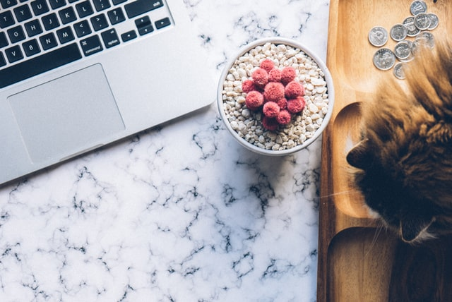

About me

I'm Vanessa Denardin. Born and raised in Brazil, I moved to Australia in 2015, living in Sydney until 2017. In 2018 I moved to Melbourne to study for a Master's degree.
I am excited to have an opportunity in the local Australian market and expand my knowledge.
Get in touch!Skills
- Strong interest in learning and developing new abilities
- Analytical skills
- Strong research skils
- Computing knowledge
- Open to trying new things